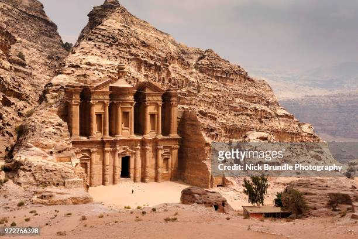

Inhabited since prehistoric times,this Nabateen caravan-city,situated between the red sea and the Dead Sea, was an important crossroads between Arabia,Egypt and Syria-Phoenincia.Petra is half-built,half carved into the rock, and is surounded by mountains riddled with passages and gorges.It is one of the world most famous archeologiacal sites, where ancient Eastern traditions blind with Hellenistic architechture.
